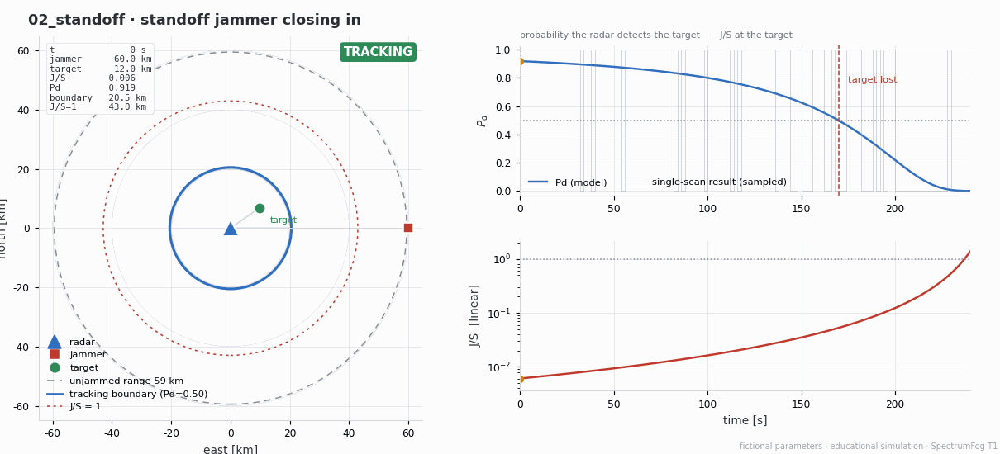
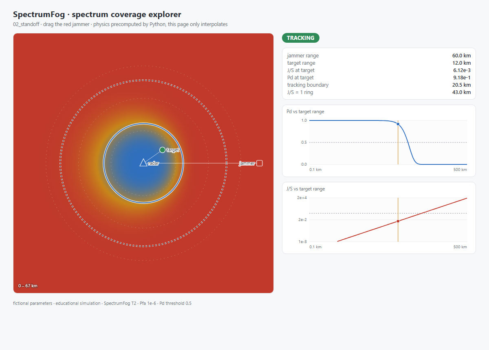
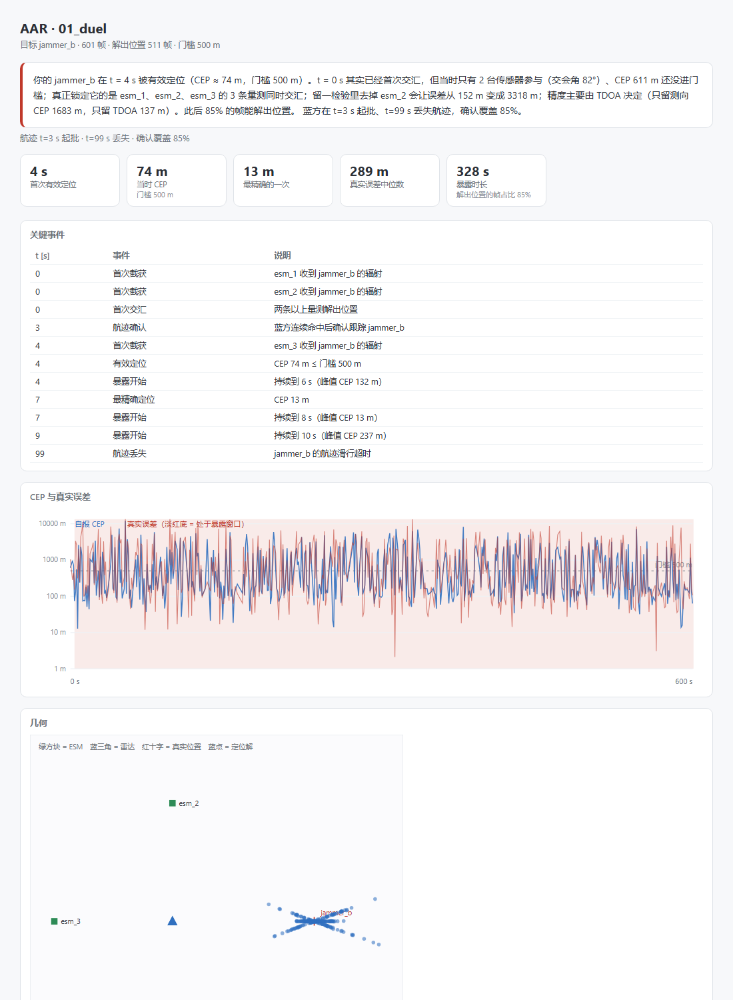

# SpectrumFog / 频谱迷雾


在线试用：haohaohao-cell.github.io/spectrumfog · 文档站：…/spectrumfog/docs · 排行榜：…/docs/leaderboard.html —— 拖动干扰机，看雷达覆盖怎么塌。纯静态，无后端。
一个部分可观测的电磁对抗仿真平台：双方都只能看到被干扰污染、被聚合过的频谱态势， 必须靠定位与识别反推对手的辐射源在哪、是什么。
不是"算杀伤"的兵棋，是"算认知"的环境。

spectrumfog sim scenarios/02_standoff.yaml --gif直接生成：干扰机从 60 km 压到 4 km， 雷达的跟踪边界从 20.5 km 收缩到 5.3 km，12 km 处的目标在 t = 170 s 丢失。 右上曲线是模型概率 Pd，灰色阶梯是单次照射的抽样结果。
一条命令跑起来
python -m venv .venv
. .venv/bin/activate # Windows: .venv\Scripts\activate
pip install -e .
spectrumfog sim scenarios/02_standoff.yaml --gif # 跑仿真 → replay.jsonl → GIF
spectrumfog run scenarios/01_duel.yaml # 静态曲线：烧穿 / Pd–距离 / J/S–距离
如果 spectrumfog 不在 PATH 里（Windows 上 pip 的 Scripts/ 目录常常不在），
等价写法是 python -m spectrumfog ...。
| 命令 | 产出 |
|---|---|
spectrumfog sim <yaml> |
out/<name>.jsonl（一行一事件的 replay）+ 终端摘要 |
spectrumfog sim <yaml> --gif |
再加一段俯视动画 out/<name>.gif |
spectrumfog animate <jsonl> -o x.gif |
只读 replay 重出动画（viz 不碰引擎） |
spectrumfog run <yaml> |
三张静态图 + 链路指标 |
spectrumfog export-web <yaml> -o data.json |
前端数据包（T2 用，见下） |
spectrumfog aar <jsonl> |
复盘报告：时间线 + 暴露时长 + 归因（单页 HTML） |
spectrumfog bench --all |
baseline 策略评测表（Gymnasium 环境，见下） |
spectrumfog bench --suite … --submit |
生成可校验的排行榜提交物 |
spectrumfog bench --verify <json> |
校验提交物与当前想定是否一致 |
spectrumfog bench --leaderboard submissions |
汇总排名 |
当前状态
T2 — Web 交互已上线（106 项 Python 单测 + 16 项前端单测，CI 全绿）。 在线页面：haohaohao-cell.github.io/spectrumfog
| 部分 | 状态 |
|---|---|
| 雷达方程 / J·S / 烧穿距离 / Pd（Swerling I）/ 检测距离 | ✅ |
| 自由空间传播 / 链路预算 / Eb·N0 / 抗干扰余量 | ✅ |
| 想定 YAML（pydantic 校验 + 单位归一化 + 航路点） | ✅ |
| 固定步长时钟 + 确定性主循环 + seeded RNG | ✅ |
| replay JSONL：一行一事件、逐字节可复现 | ✅ |
| 俯视动画（包围圈收缩 / Pd·J/S 时间曲线） | ✅ |
| 观测（AOA/TOA/功率测量）+ 融合定位 + 虚假目标 | ✅ T3a |
| AAR 复盘（时间线 · 暴露时长 · 留一法归因 · HTML 报告） | ✅ T3a |
| Web 交互（拖动干扰机 → 热力图与曲线） | ✅ 线上已部署 |
| Gymnasium 环境 + 3 个 baseline + 6 个想定 | ✅ T3b |
| 文档站 + 提交物校验 + 排行榜 | ✅ T3b |
三个反直觉的结果（免得你以为算错了）
1. 烧穿 ≠ 能检测。 01_duel（150 kW / 35 dBi 雷达，90 W 干扰机在 30 km）里，
J/S = 1 的烧穿半径是 3.24 km，但干扰下真正还能维持 Pd = 0.5 的距离只有 0.75 km——差了 4 倍多。
因为 J/S = 1 只是把信噪比砍掉 3 dB，而这里的 Swerling I 闭式要 Pd = 0.5 得约 20 dB。
"目标在烧穿圈内"不等于"雷达看得见它"。
2. 1 W 干扰机能压制 150 kW 雷达。 02_standoff 里，1 W 干扰机在 60 km、
目标在 12 km。因为想定默认关闭了处理增益（脉压、相干积累、MTI）：
100 MHz 上摊开的 1 W 落进 2 MHz 接收机只剩 20 mW，而 12 km 处的回波本身只有 −67 dBm，
噪声底是 −108 dBm。这个数字是"没有处理增益"这个前提的产物，不是仿真结果。
3. 光有 20 dB 处理增益还不够。 07_gain 与 01_duel 同一组参数，只把
processing_gain_db 从 0 提到 40：J/S 从 85.6 掉到 0.0086，Pd 从 1e-6 升到 0.85，
601 帧里从 0 次命中变成 505 次。但中间那一档 20 dB 只把 J/S 压到 0.86，
601 帧只命中 2 帧——"加 20 dB 就翻盘"是错觉，要压回去大约需要 40 dB。
这三条都是 docs/design.md §5–§6 里写明的取舍， 完整缺口清单在 docs/physics.md §7（处理增益默认关、无多径地形、无航迹状态机）。
Web 交互（T2）
拖动干扰机，覆盖热力图、跟踪边界和两条曲线实时跟着变；没有后端。
物理仍然只有 Python 这一份：export-web 把 Pd/J-S 编译成 (Rt, Rj) 查表，
网页只做插值和画图。
spectrumfog export-web scenarios/02_standoff.yaml -o viz/web/public/data.json
cd viz/web && npm install && npm run dev # http://localhost:5173
npm run build # dist/ 纯静态，可丢 GitHub Pages
数据包格式与"为什么前端不算物理"写在 docs/web.md。

初始状态：干扰机在 60 km，12 km 处的目标仍被跟踪（Pd 0.92），跟踪边界 20.5 km。 把红色方块往雷达方向拖，边界和蓝色区域会一起收缩。
AAR 复盘（T3a / T3b+）
replay.jsonl 进，单页 HTML 出：关键事件时间线、暴露时长、定位误差归因。
结论句是自动生成的，每个数字都能由日志行复算：
你的 jammer_b 在 t = 4 s 被有效定位（CEP ≈ 74 m，门槛 500 m）。 t = 0 s 其实已经首次交汇，但当时只有 2 台传感器参与（交会角 82°）、CEP 611 m 还没进门槛； 真正锁定它的是 esm_1、esm_2、esm_3 的 3 条量测同时交汇； 留一检验里去掉 esm_2 会让误差从 152 m 变成 3318 m； 精度主要由 TDOA 决定（只留测向 CEP 1683 m，只留 TDOA 137 m）。
spectrumfog sim scenarios/01_duel.yaml --out out # 出 replay
spectrumfog aar out/01_duel.jsonl # 出 out/01_duel_aar.html
两份想定都能复盘，结论完全不同：
| 想定 | 首次有效定位 | 暴露时长 | 最精确 | 为什么会这样 |
|---|---|---|---|---|
01_duel（固定站位） |
4 s | 328 s | 13 m | 三站同帧交汇，精度由 TDOA 撑起（只留测向 CEP 1683 m） |
02_standoff（干扰机 60→4 km） |
44 s | 90 s | 11 m | 前 40 秒只有零星截获，凑不齐同帧两站；越近越准 |
02_standoff 前 44 秒没被有效定位，不是模型坏了：1 W 的干扰机在 60 km 处 SNR 只有 11，
收得到、定不准；等它压进 20 km 以内，同帧两站交汇才有意义，CEP 从 461 m 收敛到 11 m。
反过来，降功率确实更隐蔽——01_duel 里把 90 W 降到 9 W，对方就再也定不进门槛
（最好 943 m > 500 m），代价是压制效果也弱了。
"原因是 X" 不是形容词：留一法逐台去掉传感器重解一次，外加"只留测向 / 只留 TDOA" 两组对照，都是同一套最小二乘，所以归因结论和定位结论不可能不一致。

报告现在还会给出航迹：蓝方在 t=3 s 起批、t=99 s 丢失、确认覆盖 85%。 这是和"单帧解出位置"不同的问题——航迹要连续命中 3 次才算确认， 确认后还能滑行 5 帧，所以"漏一帧"和"跟丢了"终于是两件事。
Baseline 评测（T3b）
spectrumfog bench --all 把五份想定变成 Gymnasium 决策问题，让三个策略各跑几局：
scenario policy reward jammed exposed Pd mean J/S mean 首告警[s]
----------------------------------------------------------------------------------------
01_duel always-jam 281.0± 16 100% 51% 0.000 85.63 2
01_duel random 223.9± 13 68% 30% 0.305 54.71 5
01_duel stealth 3.5± 3 4% 3% 0.917 53.66 46
02_standoff stealth 3.8± 3 7% 3% 0.952 0.01 95
02_standoff random -1.6± 1 0% 0% 0.957 0.00 206
02_standoff always-jam -3.4± 0 0% 1% 0.919 0.01 127
03_triad stealth 0.0± 0 0% 0% 0.861 0.00 —
03_triad random -37.5± 4 0% 62% 0.861 0.00 4
03_triad always-jam -61.2± 0 0% 100% 0.861 0.00 2
04_fog always-jam 49.3± 4 100% 16% 0.000 43.25 11
04_fog random 35.0± 3 62% 3% 0.351 22.70 51
04_fog stealth 1.9± 2 7% 3% 0.875 55.13 48
05_mobile always-jam 81.7± 3 100% 7% 0.002 1.52 25
05_mobile random 51.2± 3 64% 6% 0.362 0.73 37
05_mobile stealth 0.4± 0 4% 3% 0.952 1.24 88
06_decoy stealth 60.0± 0 100% 0% 0.363 0.00 —
06_decoy random 59.5± 0 100% 0% 0.137 0.55 —
06_decoy always-jam 58.8± 0 100% 0% 0.000 1.17 —
07_gain stealth 3.5± 3 4% 3% 0.924 0.01 46
07_gain random -184.1± 18 0% 30% 0.887 0.01 5
07_gain always-jam -319.0± 16 0% 51% 0.849 0.01 2
读法：90 W 的 01_duel 里蛮干就能赢（30 km 处 Pd 已压到 1e-6，靠近纯属浪费）；
只有 1 W 的 02_standoff 里必须贴脸，但贴脸就被三站交汇——stealth 打一下就跑，
成功率 7%。03_triad 是链路场景，三个雷达思路的 baseline 谁也不会往接收机那边靠，
所以全是负分（J/S 列为 0 是因为它的干扰机与雷达不同频）。没有一个策略通吃，
这正是要 benchmark 而不是调一个 demo 的原因。
环境契约（观测 6 维、动作 15 个、奖励设计、部分可观测落在哪）见 docs/bench.md。 三个 baseline 只吃观测，不读环境私有状态。
怎么读这份代码
src/spectrumfog/
units.py SI 常量 + 单位换算（dB/km/MHz 只活在边界上）
physics/ radar.py · propagation.py · comms.py —— 纯 numpy，无状态
model/ scenario.py · platform.py · emitter.py · sensor.py —— pydantic
engine/ clock.py（固定步长）· sim.py（主循环）· detect.py（ESM 观测）· fusion.py（定位）
bench/ env.py（Gym 环境）· policies.py（3 个 baseline）· runner.py（评测）
aar.py 复盘：时间线 + 暴露时长 + 归因
metrics.py CEP / 暴露时长
replay.py JSONL 读写；帧聚合
cli.py run / sim / animate / export-web / aar / bench
viz/static/
plot.py matplotlib 静态图
animate.py 俯视动画（只读 replay，不回写）
scenarios/
01_duel.yaml T0：单雷达 vs 单干扰机 + 三部 ESM（自屏蔽，静态）
02_standoff.yaml T1：站距干扰 + 移动干扰机 + 待机目标（动画）
03_triad.yaml T3b：雷达 + 通信链路 + 双频段干扰机（链路可用率）
04_fog.yaml T3b：三个辐射源 + 5e-3 虚警率（多目标 + 虚假目标）
05_mobile.yaml T3b：雷达 / 干扰机 / 目标三方同时机动
06_decoy.yaml T3b：转发式诱饵骗雷达（等效 RCS 6.3 m²）
tests/ 182 项：物理、想定、时钟、回放、确定性、动画、融合、AAR、通信链路、Gym、Web 数据包、CLI
viz/web/src/ 16 项前端单测（查表解码、插值、首屏渲染）
docs/ physics.md（公式与假设）· design.md（建模取舍）· scenario.md（YAML schema）
metrics.md（指标定义）· web.md（前端数据包）· bench.md（Gym 与评测）
launch.md（发布文案）
三条硬约束（PROJECT.md §2，改之前先想清楚）：
- 确定性优先：固定步长 + seeded RNG + 事件日志；同一 seed 的 replay 逐字节相同。
- 引擎与表现分离：
spectrumfog内核不 import 任何 UI 库；viz只读 replay。 - 一个内核，三个面：CLI / Web / Gym 共用同一份物理，不许各写一套。
内部一律 SI（W / m / Hz / s / rad）；dB、km、MHz 只允许出现在 YAML 输入和终端输出。
文档地图
| 想知道什么 | 看哪 |
|---|---|
| 公式、单位、假设、已知缺口 | docs/physics.md |
| 为什么这么设计（取舍、被否决的方案） | docs/design.md |
| 想定 YAML 怎么写 | docs/scenario.md |
| 指标口径（Pd / CEP / 暴露时长…） | docs/metrics.md |
| 网页的数据包怎么来的 | docs/web.md |
| 路线图与验收标准 | PROJECT.md |
合规声明
- 仅使用公开教科书物理公式（雷达方程、Friis、Swerling I）与虚构参数； 不包含任何真实装备性能数据、番号或部署信息。
- 定位为 educational / research simulation，非作战软件，不提供战术建议。
- 命名与文案避免"作战/打击/杀伤"等表述，统一用 simulation / analysis。
许可
- 代码（
src/、viz/、tests/）：Apache-2.0，版权 2026 郝仁昱 - 文档与想定（
docs/、scenarios/、README.md）：CC BY 4.0
引用信息见 CITATION.cff。